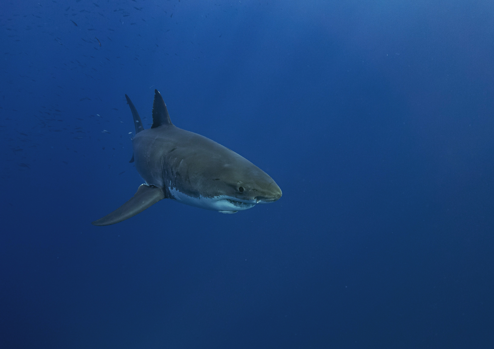
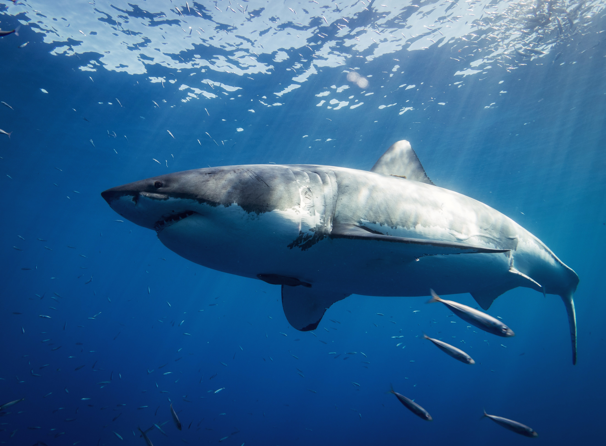

More About Great Whites
Great white sharks can swim at speeds of 25 km/hr (16 mph) for short bursts and to depths of 1,200 m (3,900 ft). The great white shark has no known natural predators other than, on very rare occasions, the killer whale. It is arguably the world's largest-known extant macropredatory fish, and is one of the primary predators of marine mammals, up to the size of large baleen whales. This shark is also known to prey upon a variety of other marine animals, including fish, and seabirds. It is the only known surviving species of its genus Carcharodon, and is responsible for more recorded human bite incidents than any other shark.
The great white shark has a robust, large, conical snout. The upper and lower lobes on the tail fin are approximately the same size which is similar to some mackerel sharks. A great white displays countershading, by having a white underside and a grey dorsal area (sometimes in a brown or blue shade) that gives an overall mottled appearance. The coloration makes it difficult for prey to spot the shark because it breaks up the shark's outline when seen from the side. From above, the darker shade blends with the sea and from below it exposes a minimal silhouette against the sunlight. Great white sharks, like many other sharks, have rows of serrated teeth behind the main ones, ready to replace any that break off. When the shark bites, it shakes its head side-to-side, helping the teeth saw off large chunks of flesh.Great white sharks, like other mackerel sharks, have larger eyes than other shark species in proportion to their body size. The iris of the eye is a deep blue instead of black. Great whites, like all sharks, do not have sonar, nor can they roar or growl.
